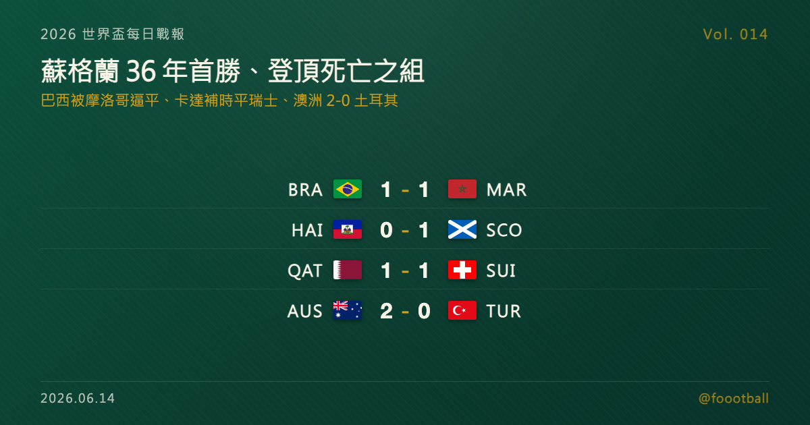

蘇格蘭 36 年世界盃首勝登頂死亡之組：巴西 1-1 摩洛哥、卡達補時逼平瑞士
2026 世界盃台北時間 6/14 凌晨到上午，B、C、D 三組首輪收官。最大焦點在 C 組：奪冠熱門巴西被 2022 世界盃四強摩洛哥 1-1 逼平，反倒是蘇格蘭在波士頓近郊 1-0 擊敗海地、靠約翰·麥金上半場進球，拿下隊史自 1990 年以來首場世界盃勝利並登上 C 組龍頭。B 組卡達在補時製造 Muheim 烏龍、1-1 逼平瑞士，四隊全部握手言和；D 組澳洲 2-0 土耳其、與美國同積 3 分，20 歲的 Irankunda 在世界盃首戰破門。

2026 世界盃每日戰報 Vol. 014
§1 即時比分戰報
開幕進入第三日，台北時間從凌晨到下午，B、C、D 三個小組接力打完了各自的首輪。最受矚目的是 C 組——這個堪稱本屆早段最不舒服的小組裡，奪冠熱門巴西被 2022 世界盃四強摩洛哥 1-1 逼平，反倒是蘇格蘭在波士頓近郊 1-0 擊敗海地、悄悄登上龍頭。B 組則是另一種風景：卡達在補時逼平瑞士，加上前一日加拿大與波赫的平局，這組四隊首輪全部 1-1 收場、積分完全平手。D 組由兩個地主的對手各取一勝——美國與澳洲攜手領跑。以下是本輪四場賽果：
| 賽事 | 比分 | 場館 | 焦點 |
|---|---|---|---|
| 🇶🇦 卡達 — 🇨🇭 瑞士 | 1 - 1 | 聖塔克拉拉 Levi's Stadium（賽事期間亦稱 San Francisco Bay Area Stadium） | Embolo 17' 點球（瑞）先進；卡達補時製造 Muheim 烏龍扳平（90+4） |
| 🇧🇷 巴西 — 🇲🇦 摩洛哥 | 1 - 1 | 紐澤西 MetLife Stadium（賽事期間亦稱 New York New Jersey Stadium） | Saibari 21'（摩）先進；Vinícius Jr 32'（巴）扳平 |
| 🇭🇹 海地 — 🏴 蘇格蘭 | 0 - 1 | 福克斯堡 Gillette Stadium（賽事期間亦稱 Boston Stadium） | 約翰·麥金（John McGinn）28' 一擊定江山 |
| 🇦🇺 澳洲 — 🇹🇷 土耳其 | 2 - 0 | 溫哥華 BC Place | Irankunda 27'、Metcalfe 75'（皆澳洲） |
四場分屬 B、C、D 組，三組首輪到此全部打完。積分榜也隨之開出——§2 是現在的形勢。
§2 排行榜區：B／C／D 組首輪收官形勢
C 組（首輪打完）——「死亡之組」第一輪最大的意外，是蘇格蘭爬到了巴西與摩洛哥頭上：
| # | 球隊 | 賽 | 勝 | 和 | 負 | 進 | 失 | 差 | 分 |
|---|---|---|---|---|---|---|---|---|---|
| 1 | 🏴 蘇格蘭 | 1 | 1 | 0 | 0 | 1 | 0 | +1 | 3 |
| 2 | 🇧🇷 巴西 | 1 | 0 | 1 | 0 | 1 | 1 | 0 | 1 |
| 2 | 🇲🇦 摩洛哥 | 1 | 0 | 1 | 0 | 1 | 1 | 0 | 1 |
| 4 | 🇭🇹 海地 | 1 | 0 | 0 | 1 | 0 | 1 | −1 | 0 |
B 組（首輪打完）——四隊全部 1-1，分數完全平手，這組要等第二輪才會分出高下：
| # | 球隊 | 賽 | 勝 | 和 | 負 | 進 | 失 | 差 | 分 |
|---|---|---|---|---|---|---|---|---|---|
| 1 | 🇨🇦 加拿大 | 1 | 0 | 1 | 0 | 1 | 1 | 0 | 1 |
| 1 | 🇧🇦 波赫 | 1 | 0 | 1 | 0 | 1 | 1 | 0 | 1 |
| 1 | 🇶🇦 卡達 | 1 | 0 | 1 | 0 | 1 | 1 | 0 | 1 |
| 1 | 🇨🇭 瑞士 | 1 | 0 | 1 | 0 | 1 | 1 | 0 | 1 |
D 組（首輪打完）——美國與澳洲雙雙取勝、各拿 3 分，靠淨勝球分高下：
| # | 球隊 | 賽 | 勝 | 和 | 負 | 進 | 失 | 差 | 分 |
|---|---|---|---|---|---|---|---|---|---|
| 1 | 🇺🇸 美國 | 1 | 1 | 0 | 0 | 4 | 1 | +3 | 3 |
| 2 | 🇦🇺 澳洲 | 1 | 1 | 0 | 0 | 2 | 0 | +2 | 3 |
| 3 | 🇵🇾 巴拉圭 | 1 | 0 | 0 | 1 | 1 | 4 | −3 | 0 |
| 4 | 🇹🇷 土耳其 | 1 | 0 | 0 | 1 | 0 | 2 | −2 | 0 |
別忘了本屆晉級規則：12 個小組、每組前兩名加上 8 個最佳第三名，共 32 隊晉級淘汰賽。對先吞一敗的海地、四隊全平的 B 組來說，沒有人被推到牆角——每一分都可能在三週後變成晉級關鍵。
§3 賽事摘要
- 卡達 1-1 瑞士：瑞士幾乎整場壓著打，第 17 分鐘由 Breel Embolo（恩波洛）一記點球先馳得點，全場射門次數遠多於對手，眼看就要帶走三分。但卡達死守到最後，在補時階段（第 94 分鐘）逼平：Homam Ahmed 一記傳中在後點製造混亂，卡達隊長 Boualem Khoukhi（布阿萊姆·胡赫）與瑞士後衛 Miro Muheim 高高躍起爭頂，皮球經 Muheim 觸碰後入網——FIFA 官方記為 Muheim 烏龍，比分定格 1-1。對控球與機會都占盡上風的瑞士，這一分難免可惜；但對補時才扳平的卡達，這是不放棄到最後一秒換來的回報。要知道 2022 年卡達以地主身分參賽、卻三戰全敗一分未得，這回首戰就在補時搶下一分——這是卡達在世界盃舞台上拿到的隊史第一分，意義遠不只是計分板上的數字。
- 巴西 1-1 摩洛哥：本輪最受矚目的一戰，五星巴西被 2022 世界盃四強摩洛哥逼平。第 21 分鐘摩洛哥的 Ismaël Saibari 先聲奪人，巴西落後到第 32 分鐘才由 Vinícius Júnior（維尼修斯）扳平。安切洛蒂（Carlo Ancelotti）治下的巴西控球與威脅不缺，但摩洛哥用紀律與整體性再次證明——這支上屆寫下非洲與阿拉伯世界歷史的球隊，面對豪門從不怯場。一分對巴西談不上理想，卻仍在小組賽首輪的容錯範圍內；對摩洛哥，從強敵身上拿分是延續氣勢的好開始。對安切洛蒂仍在磨合的這支巴西來說，本屆 48 隊、賽程更長，慢熱的豪門有的是時間調整；但摩洛哥已先示範了這條路不好走——上屆四強的硬度不是僥倖，C 組接下來只會更難纏。
- 海地 0-1 蘇格蘭：相較前兩場的你來我往，這場是一記進球定江山。蘇格蘭在福克斯堡的 Gillette Stadium 由中場核心約翰·麥金（John McGinn）在第 28 分鐘破門——Che Adams 的射門被海地門將 Johny Placide 擋出，麥金跟進補射建功，這也是全場唯一進球。海地雖在下半場製造過機會卻未能把握，首戰無緣拿分；但在每組前兩名加 8 個最佳第三名的新賽制下，這支加勒比球隊仍把後路留著。對蘇格蘭而言，這一勝的份量遠超過三分——見 §4。
- 澳洲 2-0 土耳其：D 組另一場由地主對手交出的乾淨勝利。澳洲在溫哥華 BC Place 踢得務實有效，第 27 分鐘由年僅 20 歲的 Nestory Irankunda（伊蘭昆達）破門先馳得點——據澳洲媒體報導，這一球也讓他成為澳洲世界盃史上最年輕的進球者；下半場 Connor Metcalfe（梅特卡夫）第 75 分鐘再下一城，把比分鎖定在 2-0。這場的反差在於，土耳其長時間掌握球權與射門量，卻被澳洲用低位防守與快速反擊切斷了節奏；手握 Çalhanoğlu 等好手的土耳其控球占優，臨門一腳卻始終轉化不成進球，首戰吞敗——但小組賽才剛起步，一場失利還不至於定生死。這場勝利讓澳洲與美國同積 3 分、攜手領跑 D 組。
§4 焦點觀察｜蘇格蘭的 36 年：一個從沒過關的「常客」，第一次站上龍頭
世界盃的開幕日總被巨星與豪門占據版面，但 2026 年 6 月 13 日這一夜，最動人的故事屬於一支幾乎沒人看好的球隊——蘇格蘭。
數字會說話。蘇格蘭 1-0 擊敗海地的這場勝利，是他們自 1990 年以來、睽違 36 年的第一場世界盃勝利（上一勝是 1990 年義大利世界盃 2-1 擊敗瑞典）；這也是他們自 1998 年法國世界盃之後首次重返會內賽，更是自 1982 年以來第一次在世界盃首戰就拿下勝利。蘇格蘭是世界盃的老面孔，卻有一個尷尬的標籤：在過去每一屆的參賽史上，他們從未踢進過淘汰賽——8 度叩關、8 度在小組賽止步。對一支足球文化深厚的國家來說，這是長年的隱痛。
而這一勝來得格外有戲劇性。蘇格蘭被抽進的 C 組，紙面上是名副其實的「死亡之組」：五星巴西、2022 世界盃四強摩洛哥都在其中。多數人賽前把蘇格蘭與海地一起歸進「陪跑」的那一格。結果首輪打完，巴西被摩洛哥逼平、各拿一分，靠著約翰·麥金（John McGinn）上半場的一擊，反而是蘇格蘭以 3 分獨自站上了 C 組龍頭。在 Steve Clarke（史蒂夫·克拉克）的調教下，這支球隊把「務實、團結、咬牙守住」的氣質貼在了世界盃的計分板上。
對蘇格蘭的球迷——那支以熱情聞名、被暱稱為「Tartan Army（格子軍團）」的遠征大軍——這一夜等得太久。這是一個足球文化深厚、歷史悠久的國度，球迷的忠誠常被視為世界足壇的標竿，偏偏在世界盃舞台上總與勝利、與淘汰賽擦身而過。這次替他們打破沉默的麥金，是效力英超阿斯頓維拉（Aston Villa）的中場主力、近年蘇格蘭中場的靈魂人物；他第 28 分鐘那記補射破門談不上華麗，卻正是這支球隊的縮影——不靠單一巨星，靠的是整體的紀律與韌性。對一支長年「差一點」的球隊來說，先把「贏球」這件事做到，本身就是一種解放。
更關鍵的是賽制。本屆世界盃擴軍到 48 隊，每組前兩名、加上 8 個成績最好的第三名，共 32 隊晉級淘汰賽。換句話說，蘇格蘭只要守住這個開局，史上第一次踢進世界盃淘汰賽的大門，從沒像現在這麼近過。當然，接下來還有巴西與摩洛哥兩道硬關，一場勝利遠不能保證什麼；但對一支等了 36 年才再嘗勝果的球隊，先在死亡之組站上龍頭，本身就已經是一個值得記住的夜晚。接下來兩輪，只要再從巴西或摩洛哥手上偷到一兩分，那扇蘇格蘭從未推開過的淘汰賽大門，就真的有機會被這一代人推開——這也是 48 隊新賽制最直接改變的地方：一場首勝，足以重新定義小隊的出線想像。
§5 台北時間明晨看點
B、C、D 三組首輪收官後，開幕戲碼正式交棒給更多新組別。台北時間明晨起，輪到 E 組與 F 組第一批球隊登場——德國將在 E 組揭開自己的開幕秀，對上加勒比小國古拉索；F 組則有一場分量十足的對決：荷蘭對上日本，歐洲勁旅與亞洲代表正面交鋒，會是檢驗本屆亞洲球隊成色的早期指標。隨著愈來愈多傳統強權進場，各組積分榜會在接下來幾天快速成形、出線形勢也將逐漸清晰。E、F 組的首戰賽果與最新形勢，Vol. 015 接著報。
資料來源：FIFA 賽程與場館資訊、ESPN、Reuters、The Guardian、BBC、SBS 等賽後報導交叉核對（2026 世界盃 6/13 美加墨當地賽果、進球分鐘、分組與球員資料）。賽程與時間以台北時間換算、實際以官方公告為準。
常見問題
2026 世界盃 6/13（美加墨當地）有哪些比賽？結果如何？
共四場：巴西 1-1 摩洛哥、海地 0-1 蘇格蘭（C 組），卡達 1-1 瑞士（B 組），澳洲 2-0 土耳其（D 組）。蘇格蘭靠約翰·麥金（John McGinn）第 28 分鐘進球擊敗海地，拿下 36 年來首場世界盃勝利並登上 C 組龍頭。
為什麼說蘇格蘭這場勝利意義重大？
這是蘇格蘭自 1990 年（睽違 36 年）以來第一場世界盃勝利，也是 1982 年後首次在首戰就告捷。蘇格蘭過去參加世界盃從未踢進過淘汰賽；在本屆 48 隊、每組前兩名加 8 個最佳第三名共 32 隊晉級的新賽制下，他們史上首次晉級淘汰賽的機會前所未有地接近。
C 組與 D 組目前積分榜如何？
C 組：蘇格蘭 3 分領先，巴西、摩洛哥各 1 分，海地 0 分。D 組：美國（淨勝球 +3）與澳洲（+2）同積 3 分領跑，巴拉圭、土耳其 0 分。本屆每組前兩名加 8 個最佳第三名，共 32 隊晉級淘汰賽。
Tags：世界盃, 2026世界盃, 蘇格蘭, McGinn, 巴西, 摩洛哥